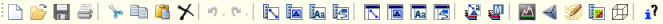
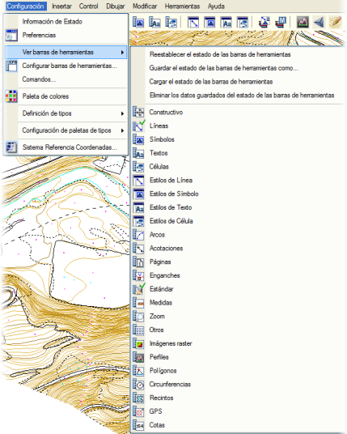
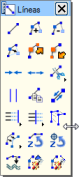
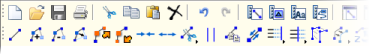
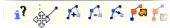
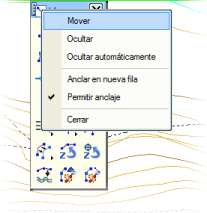
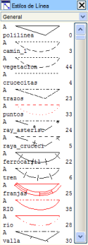
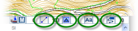

| |
|
ARAÇ ÇUBUKLARI
|
Araç çubukları, ikonlarla temsil edilen butonlar aracılığıyla programın birçok fonksiyonuna hızlı erişim sağlayan arayüz elemanlarıdır. ISTRAM®/ISPOL®, sayısal harita düzenlemesini basitleştirmek amacıyla oluşturulmuş bir dizi araç çubuğu sunar ve ayrıca kullanıcının kendi araç çubuklarını oluşturup özelleştirmesine olanak tanır. Programın Araç Çubukları ISTRAM®/ISPOL®, çok sayıda araç çubuğu ile donatılmıştır, ancak varsayılan olarak sadece standart araç çubuğu görünür durumdadır: 
Varsayılan olarak ana menünün altında yer alan bu çubuk, Yapılandırma → Standart çubuğu göster seçeneği işaretli olduğu sürece görünür olacaktır. Fareyi farklı ikonlar üzerinde gezdirirken, imlecin üzerinde bulunduğu seçenek vurgulanacaktır. Bu çubuğun sunduğu seçenekler şunlardır:
Diğer araç çubukları, Yapılandırma → Araç çubuklarını göster menüsünden görünür hale getirilebilir (ancak görüldüğü gibi, en çok kullanılanlar standart araç çubuğundan da çağrılabilir). 
Eğer birden fazla araç çubuğunu açmak/kapatmak isteniyorsa, her seçimde menünün kapanmasını önlemek için <Ctrl> tuşunu basılı tutmak faydalı olacaktır. Bu menüden ayrıca, araç çubuklarının mevcut durumunu daha sonra veya başka bir oturumda geri yüklemek üzere bir .cfgp dosyasına kaydetmek de mümkündür. Her durumda, programın her zaman bir önceki oturumdaki son araç çubuğu düzeniyle başladığı unutulmamalıdır. [Araç çubuklarının durumunu sıfırla] seçeneği, tüm araç çubuklarını çizim alanının sağ üst köşesine "yığar".
Ayrıca, standart araç çubuğu üzerinde veya ana menünün seçenek olmayan bir bölgesinde farenin sağ tuşuna basıldığında, bahsedilen bazı seçeneklere doğrudan erişim sağlayan ve mevcut araç çubuklarını görünür yapmaya yarayan bir menü açılır. Araç çubuklarının boyutu doğrudan fare ile ayarlanabilir. Fare imlecini çubuğun kenarlarından birine yaklaştırıp çift yönlü ok şeklini almasını beklemek ve ardından ana tuşa basılı tutarak çubuk istenen boyutlara gelene kadar sürüklemek yeterlidir. Bir araç çubuğunu kapatmak için sağ üst köşedeki  butonuna basmak veya sol üst köşedeki ikona çift tıklamak yeterlidir. butonuna basmak veya sol üst köşedeki ikona çift tıklamak yeterlidir.Başlık çubuğuna (üst kısım) çift tıklandığında, çubuk simge durumuna küçültülür (gizlenir). Aynı bölgeye tekrar çift tıklamak, çubuğun yeniden gösterilmesini sağlar. Aynı şekilde, ilgili çubuğu ana menünün altındaki bölgeye sürükleyerek farklı araç çubuklarını bu alana entegre etmek (bu işleme çubuğu ‘sabitleme’ diyoruz) mümkündür. Bir araç çubuğunu ‘sabitlemekten çıkarmak’ için fare imleci çubuğun başlangıcına (dört nokta ile temsil edilen) getirilir ve imleç taşıma şeklini (dört ok) aldığında, ana tuşa basılı tutularak çubuk istenen bölgeye sürüklenir. Son olarak, bir araç çubuğunun başlık alanındaki kimlik ikonuna tıklandığında, o araç çubuğuna ilişkin çeşitli seçenekler içeren ve şunları yapmaya olanak tanıyan bir menü açılır:
Geometrik Düzenleme Araç Çubuğu Bu araç çubuğunda, çizim nesnelerinin geometrik dönüşümleriyle ilgili çeşitli seçenekler gruplandırılmıştır.
Çizgiler Araç Çubuğu Bu çubuk altında, çoklu doğruların (polyline) düzenleme seçeneklerinin büyük bir kısmı yer almaktadır.
Semboller Araç Çubuğu Bu çubuk, sembol oluşturma ve düzenleme ile ilgili seçeneklerin çoğuna adanmıştır.
Metinler Araç Çubuğu Yazı oluşturma ve düzenleme için mevcut olan farklı seçeneklere erişim sağlar.
Grafik Hücreler (Cell) Araç Çubuğu Grafik hücrelerle ilgili fonksiyonlara doğrudan erişim için oluşturulmuştur.
Stil (Tip) Araç Çubukları  Mesaj alanındaki ikonlardan da erişilebilen stil araç çubukları, o an aktif olan çizgi, sembol, metin ve grafik hücre tipi paletlerini açar ve mevcut tipi anında değiştirmeye olanak tanır. 
Bu araç çubukları, hem kendisiyle hem de fare tekerleğiyle kullanılarak tüm palete erişim sağlayan dikey bir kaydırma çubuğuna sahiptir. Çizgiler söz konusu olduğunda, stil hem Basit Görünüm modunda (üstteki yatay çizgi) hem de Detaylı Görünüm modunda (çizginin geri kalanı, eğer eğri görünüyorsa yumuşatma içerdiğini belirtir) temsil edilir. Programın Pafta modunda mı yoksa Ekran modunda mı olduğuna bağlı olarak, her çizgi ilgili renkleriyle temsil edilecektir. Her stil için tipe karşılık gelen isim ve numara belirtilir. Sol tarafta bulunan küçük "A" harfi, o tipi hızlıca devre dışı bırakmaya yarar. Bir tip devre dışı bırakıldığında, harf görünmez. Harfin bulunduğu alana tıklanırsa, harf yeniden belirir ve tip tekrar aktif hale gelir. Yaylar Araç Çubuğu Bu çubuk, dairesel yay çizimi ile ilgili fonksiyonların çoğunu toplar.
Ölçülendirme Araç Çubuğu Programın ölçülendirme seçeneklerinin büyük bir kısmını içerir.
Sayfalar Araç Çubuğu Pafta sayfalama ile ilgili bir çubuktur.
Yakalama Modları Araç Çubuğu Bu çubuk, fare imlecinin tüm yakalama olanaklarını içerir.
Ölçümler Araç Çubuğu Ölçüm yapmak için operasyonları içerir.
Yakınlaştırma (Zoom) Araç Çubuğu Yakınlaştırma ile ilgili fonksiyonlara doğrudan erişim için oluşturulmuştur.
Diğerleri Araç Çubuğu Diğer tüm araç çubuklarına çağrı yapan bir araç çubuğudur, bu da onları hızlıca göstermeyi ve gizlemeyi sağlar. Raster Görüntüler Araç Çubuğu Raster görüntülerle gerçekleştirilebilecek tüm işlemlere erişim sağlar.
Enkesit Editörü Araç Çubuğu Kullanımı enkesit düzenleme ortamıyla sınırlıdır ve çeşitli özel yardımcı programlar içerir.
Çokgenler Araç Çubuğu Çokgen çizmenin farklı yollarını gruplandırır.
Çemberler Araç Çubuğu Çember çizmenin farklı yollarını gruplandırır.
Kapalı Alanlar Araç Çubuğu Kapalı alanlarla ilgili farklı seçenekleri gruplandırır.
GPS Araç Çubuğu Gerçek zamanlı GPS kullanımını sağlayan araçla ilgili farklı seçenekleri gruplandırır.
Kotlar Araç Çubuğu Grafik nesnelerin kotlarının değiştirilmesiyle ilgili seçeneklerin büyük bir kısmını gruplandırır.
Yüzey Modelleme Araç Çubuğu YÜZEY MODELLEME modülü ile gerçekleştirilebilecek temel işlemleri gruplandırır.
Özelleştirilmiş Araç Çubukları Programın kullanımıyla ve kullanıcının ISTRAM®/ISPOL® ile yürüttüğü işlerin türüne bağlı olarak, farklı sayısal harita düzenleme aşamalarına, kullanıcı tercihlerine, programın çalışılan bölümlerine vb. göre çeşitli özelleştirilmiş araç çubuklarına ihtiyaç duyulması olasıdır. ISTRAM®/ISPOL®, kullanıcıya özel araç çubukları oluşturma yeteneğine sahiptir. Bu özellik, Görünüm → Araç çubuklarını yapılandır... menüsünden erişilebilir ve aşağıdaki iletişim kutusunu açar: Her araç çubuğuna bir isim, bir eleman sayısı (en fazla 128) ve bir sütun sayısı (yine en fazla 128) atanmalıdır. En fazla 17 adet özelleştirilmiş araç çubuğu oluşturulabilir (boş olsa bile en az bir tane her zaman mevcut olacaktır). Bir araç çubuğu oluşturmak için [Yeni] butonuna, silmek için ise [Sil] butonuna basılır. [Önceki] ve [Sonraki] butonları, mevcut özelleştirilmiş araç çubukları arasında gezinmeyi sağlar. Sol tarafta düzenlenmekte olan çubuk, sağda ise ona eklenebilecek farklı ikonların bulunduğu bir sütun görünür. Yeni bir buton eklemek için, ikonları düzenlenmekte olan araç çubuğunun numaralandırılmış konumlarına sürüklemek yeterlidir. Eğer yeni ikon, daha önce atanmış bir ikonun üzerine sürüklenirse, eskisinin yerini alır. Araç çubuğundaki iki butonu birbiriyle değiştirmek için birini diğerinin üzerine sürüklemek yeterlidir. butonu, sağdaki ikon grubunun tüm içeriğini oluşturulmakta olan araç çubuğuna aktarır. Eğer istenen, mevcut iki buton arasına yeni bir buton eklemekse, bu yeni buton ikisinin arasına sürüklenmelidir. İki ikon arasında beliren turuncu bir çubuk, yeni butonun araya ekleneceğini ve araç çubuğunun eleman sayısının artacağını gösterir. Bir butonu araç çubuğundan silmek için, onu çöp kutusu şeklindeki ikona sürüklemek yeterlidir. Farenin sağ tuşuna basıldığında, aşağıdaki seçenekleri içeren bir menü açılır:
[Tümünü Kaydet] ve [Mevcut Olanı Kaydet] butonları, sırasıyla tüm özelleştirilmiş araç çubuklarını veya sadece düzenlenmekte olanı kaydeder. İlk seçenek ayrıca, yapılandırma dosyasını seçilen kütüphaneye kaydetme seçeneği sunar. |